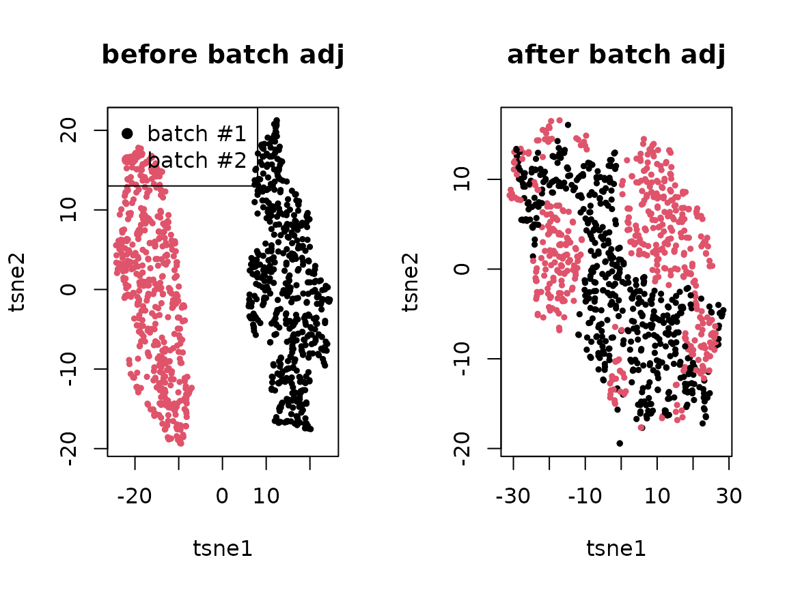

note_batch_correction.RmdWe encounter single-cell expression data consisting of multiple batches. One of the primary goals is to identify cell types (clusters/factors) and cell-type-specific gene expression patterns. However, distinguishing batch-specific and cell-type-specific genes only by a factorization method is challenging and often not identifiable from data alone. For each gene \(g\) and cell \(j\), the gene expression \(Y_{gj}\) were sampled from Poisson distribution with the rate parameter:
\[\lambda_{gj} = \lambda_{gj}^{\textsf{unbiased}} \times \prod_{k} \delta_{gk}^{X_{kj}},\]
affected by the batch effects \(\delta_{gk}\). More formally, letting \(X_{kj}\) be a batch membership matrix, assigning a cell \(j\) to a batch \(k\) if and only if \(X_{kj}=1\), we assume the average gene expression rates are linearly affected by in the log-transformed space:
\[\mathbb{E}\!\left[\ln Y_{gj}\right] = \ln \left( \sum_{t} \beta_{gt} \theta_{jt} \right) + \sum_{k} \ln\delta_{gk} X_{kj}.\]
set.seed(1331)
m <- 500 # genes
n <- 1000 # cells
nb <- 2 # batches
## 1. batch membership
X <- matrix(0, n, nb)
batch <- sample(nb, n, replace = TRUE)
for(b in 1:nb){
X[batch == b, b] <- 1
}
## 2. batch effects
W.true <- matrix(rnorm(m*nb), m, nb)
ln.delta <- apply(W.true %*% t(X), 2, scale)
## 3. true effects
K <- 5
.beta <- matrix(rgamma(m * K, 1), m, K)
.theta <- matrix(rgamma(n * K, 1), n, K)
lambda.true <- .beta %*% t(.theta)
lambda <- lambda.true * exp(ln.delta)
yy <- apply(lambda, 2, function(l) sapply(l, rpois, n=1))
oo <- order(apply(t(.theta), 2, which.max))If we can accurately estimate a true batch effect matrix, say \(\delta_{gk}\), it is straightforward to adjust the difference between batches. How can we identify the true batch effect \(\delta_{gk}\) for all the genes \(g\) specifically expressed in the batch \(k\)? If we match cells \(i\) and \(j\) sampled from the batches \(a\) and \(b\), respectively, we expect the batch-specific difference \(\delta_{ga} \neq \delta_{gk}\) will persist and even amplify, but the difference originated from cell types will vanish. This problem is equivalent to estimating the potential outcome of gene expressions in each batch \(k\), \(\mathbb{E}\!\left[Y_{gj}^{(k)}\right]\).
To dissect batch-specific effect in a causal inference (potential outcome) framework, we assume our confounding variables \(Q\) are well-distributed across different batches:
Moreover, we assume these covariates are sufficient enough to induce conditional dependence between potential (imputed) gene expression and batch assignment mechanisms:
Suppose we can counterfactually estimate gene expressions of a certain cell \(j\) if the cell was measured in different batches other than the observed batch \(k\).
\[Z_{gj} = \frac{ \sum_{i} (1 - X_{ik}) w_{ji} Y_{gi} }{ \sum_{i} (1 - X_{ik}) w_{ji} }\]
Like many other batch correction methods invented for single-cell RNA-seq analysis, we will assume \(Z_{gj}\) reliably contain biologically-relevant cell state information while excluding the batch-specific effects to which the cell \(j\) belong.
Observed log-likelihood: \[\prod_{j} p(Y_{gj}|\mu_{gs},\delta_{gk},X_{jk}) =\prod_{j} \operatorname{Poisson}(Y_{gj}|\mu_{gs} \sum_{k} \delta_{gk} X_{jk})\]
Counterfactual log-likelihood: \[\prod_{j} p(Z_{gj}|\mu_{gs}, \gamma_{gs}) = \prod_{j} \operatorname{Poisson}(Z_{gj}|\mu_{gs} \gamma_{gs})\]
\[\mathbb{E}\!\left[\mu_{gs}\right] \approx \frac{ \sum_{j \in \mathcal{C}_{s}} Y_{gj} + \sum_{j \in \mathcal{C}_{s}} Z_{gj} } {\sum_{k} \delta_{gk} n_{sk} + n_{s} \gamma_{gs}}\]
Letting \(p_{sk} = n_{sk} / n_{s}\), \[\mu_{gs} \gets \frac{ \bar{Y}_{gs} + \bar{Z}_{gs}} {\sum_{k} \delta_{gk} p_{sk} + \gamma_{gs}}\]
If \(\delta_{gk} \to 0\) and \(p_{sk}=1\), meaning that this sample \(s\) is just sampled from the batch \(k\) only, \(\mu_{gs} \to \bar{Y}_{gs} + \bar{Z}_{gs}\) and \(\bar{Y}_{gs} \to \bar{Y}_{gsk} = 0\). Therefore, \(\mu_{gs} \to \bar{Z}_{gs}\).
\[\mathbb{E}\!\left[\delta_{gk}\right] \approx \frac{\sum_{s} \sum_{j \in \mathcal{C}_{s}} X_{kj} Y_{gj}}{\sum_{s} \mu_{gs} \sum_{j \in \mathcal{C}_{s}} X_{kj}}\]
\[\delta_{gk} \gets \frac{\sum_{s} \bar{Y}_{gsk} n_{sk}} {\sum_{s} \mu_{gs} n_{sk}}\]
If \(\bar{Y}_{gsk} \to \mu_{gs}\) for all \(s\), \(\delta_{gk} \to 1\). If \(\bar{Y}_{gsk} < \mu_{gs}\) in all \(s\), \(\delta_{gk} < 1\). If \(\bar{Y}_{gsk} \to 0\) for all \(s\), \(\delta_{gk} \to 0\).
Initialize batch effect \(\delta_{gk} \gets 1\) for each gene \(g\) and batch \(k\)
Initialize \(\gamma_{gs} \gets 1\) for each sample \(s\)
Static global stat: \(S_{gk} \gets 0\)
For each pseudo-bulk sample \(s\) with cells \(\mathcal{C}_{s}\),
\(n_{sk} \gets \sum_{j \in \mathcal{C}_{s}} X_{kj}\), \(n_{s} \gets \sum_{k} n_{sk}\), \(p_{sk} \gets n_{sk}/n_{s}\)
\(\bar{Y}_{gs} \gets \sum_{j \in \mathcal{C}_{s}} Y_{gj} / n_{s}\)
\(\bar{Y}_{gsk} \gets \sum_{j \in \mathcal{C}_{s}} Y_{gj} X_{kj} / n_{s}\)
\(\bar{Z}_{gs} \gets \sum_{j \in \mathcal{C}_{s}} Z_{gj} / n_{s}\) after matching and imputation
\(S_{gk} \gets S_{gk} + \bar{Y}_{gsk} n_{sk}\)
Iterative-updated global stat: \(T_{gk} \gets 0\)
(Local step) For each PB sample \(s\):
\(\bar{\delta}_{gs} \gets \sum_{k} \delta_{gk} p_{sk}\)
\(\mu_{gs} \gets (\bar{Y}_{gs} + \bar{Z}_{gs}) / (\gamma_{gs} + \bar{\delta}_{gs})\)
\(\gamma_{gs} \gets (\bar{Y}_{gs})/(\mu_{gs})\)
For each \(k\): \(T_{gk} \gets T_{gk} + \mu_{gs} n_{sk}\)
(Global step) For each batch \(k\):
Repeat the previous three steps (5-7) until convergence
Before we adjust batch membership in the random projection matrix:
[,1] [,2][1,] 0.7617260 -0.7617260 [2,] 0.8283630 -0.8283630 [3,] 0.8099248 -0.8099248 [4,] -0.7250199 0.7250199 [5,] 0.6651915 -0.6651915
## 2. regress out
##
## X theta = X inv(X'X) X' Y
## = U D V' V inv(D^2) V' (U D V')' Y
## = U inv(D) V' V D U' Y
## = U U' Y
x.svd <- svd(X)
U <- x.svd$u
U.t <- t(x.svd$u)
Q.t <- t(Q.raw)
Q.t <- Q.t - U %*% U.t %*% Q.t
Q <- t(Q.t)After we adjust the batch effects:
cor(Q.t, X) [,1] [,2][1,] -3.279581e-16 3.279581e-16 [2,] 3.472070e-16 -3.472070e-16 [3,] -2.171142e-15 2.171142e-15 [4,] 9.365165e-16 -9.365165e-16 [5,] 2.669246e-16 -2.669246e-16
q.svd <- svd(Q)
## 3. sorting
B <- (sign(q.svd$v) + 1)/2
ss <- apply(sweep(B, 2, 2^(seq(0,K-1)), `*`), 1, sum) + 1
feat.dn <- apply(Q, 2, function(x) x / sqrt(sum(x^2)))
knn <- 3
d <- nrow(feat.dn)
library(RcppAnnoy)
## a. construct dictionary for each batch
dict.list <- lapply(sort(unique(batch)),
function(b) { new(AnnoyAngular, d) })
for(j in 1:length(batch)){
b <- batch[j]
dict.list[[b]]$addItem(j, feat.dn[,j])
}
for(dd in dict.list){
dd$build(50)
}
## b. a simplified routine to retrieve and estimate counterfactual y
.counterfactual <- function(j){
v <- feat.dn[,j]
nn <- c()
dd <- c()
for(k in 1:nb){
if(k == batch[j]) next
.nn <- dict.list[[k]]$getNNsByVector(v, knn)
.dd <- apply(feat.dn[, .nn], 2, function(u) sum((u - v)^2))
nn <- c(nn, .nn)
dd <- c(dd, .dd)
}
w <- exp(-(dd - max(dd)))
w <- w/sum(w)
yy[, nn, drop = FALSE] %*% matrix(w, ncol=1)
}
ngene <- nrow(yy)
nbatch <- ncol(X)
nsample <- max(ss)
.delta.db <- matrix(1, ngene, nbatch) # gene x batch effects
.delta.num.db <- matrix(0, ngene, nbatch) # gene x batch numerators
.delta.denom.db <- matrix(0, ngene, nbatch) # gene x batch denominators
.prob.bs <- matrix(0, nbatch, nsample) # batch x sample probabilities
.size.bs <- matrix(0, nbatch, nsample) # batch x sample freq
.ybar.ds <- matrix(0, ngene, nsample) # gene x sample observed average
.zbar.ds <- matrix(0, ngene, nsample) # gene x sample imputed average
.mu.ds <- matrix(1, ngene, nsample) # gene x sample adjusted average
## Precalculate some statistics
for(s in 1:nsample){
if(sum(ss == s) < 1) next
.yy <- yy[, ss == s, drop = FALSE]
.zz <- do.call(cbind, lapply(which(ss == s), .counterfactual))
.ybar.ds[,s] <- apply(.yy, 1, mean)
.zbar.ds[,s] <- apply(.zz, 1, mean)
.prob.bs[,s] <- colMeans(X[ss == s, ])
.size.bs[,s] <- colSums(X[ss == s, ])
.y.dsb <- yy[, ss == s, drop = FALSE] %*% X[ss == s, , drop = FALSE]
.delta.num.db <- .delta.num.db + .y.dsb
}
.gamma.ds <- matrix(1, ngene, nsample)
for(iter in 1:100){
.mu.ds <- (.ybar.ds + .zbar.ds) / (.delta.db %*% .prob.bs + .gamma.ds + 1e-8)
.gamma.ds <- .zbar.ds / (.mu.ds + 1e-8)
.delta.db <- .delta.num.db / (.mu.ds %*% t(.size.bs) + 1e-8)
}Can we recover the original batch effects?
par(mfrow=c(1,2))
plot(.delta.db[,1], W.true[,1], pch=19, xlab="estimated delta", ylab="true delta effect", main="batch1")
plot(.delta.db[,2], W.true[,2], pch=19, xlab="estimated delta", ylab="true delta effect", main="batch2")Are they independent of the cell type effects?
y.true <- sweep(lambda.true %*% X, 2, colSums(X), `/`)
par(mfrow=c(1,2))
plot(.delta.db[,1], y.true[,1], pch=19, xlab="estimated delta", ylab="true y mean", main="batch1")
plot(.delta.db[,2], y.true[,2], pch=19, xlab="estimated delta", ylab="true y mean", main="batch2")While adjusting the estimated batch effects, can we recover the unbiased cell type effects? The following is before adjustment:
ybar <- sweep(yy %*% X, 2, colSums(X), `/`)
par(mfrow=c(1,2))
plot(ybar[,1], y.true[,1], pch=19, xlab="sample mean", ylab="true y mean", log="x", main="batch1")
plot(ybar[,2], y.true[,2], pch=19, xlab="sample mean", ylab="true y mean", log="x", main="batch2")Here, we adjusted the batch effects:
ybar.adj <- sweep((yy / .delta.db[, batch]) %*% X, 2, colSums(X), `/`)
par(mfrow=c(1,2))
plot(ybar.adj[,1], y.true[,1], pch=19, xlab="adjusted sample mean", ylab="true y mean", log="x", main="batch1")
plot(ybar.adj[,2], y.true[,2], pch=19, xlab="adjusted sample mean", ylab="true y mean", log="x", main="batch2")
par(mfrow=c(1,2))
.tsne <- Rtsne::Rtsne(log(1 + t(yy)), num_threads=4)$Y
plot(.tsne[,1], .tsne[,2], col=batch, pch=19, cex=.5, main="before batch adj",
xlab = "tsne1", ylab = "tsne2")
legend("topleft", c("batch #1", "batch #2"), col=1:2, pch=19)
.tsne <- Rtsne::Rtsne(log(1 + t(yy/.delta.db[,batch])), num_threads=4)$Y
plot(.tsne[,1], .tsne[,2], col=batch, pch=19, cex=.5, main="after batch adj",
xlab = "tsne1", ylab = "tsne2")